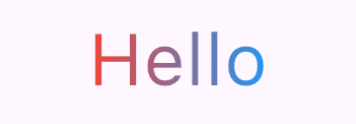

Flutter는 두 가지 방법으로 gradient를 적용할 수 있다.
BoxDecoration사용ShaderMask사용
BoxDecoration
BoxDecoration의gradient속성에 gradient를 적용한다.- Box widget을 gradient로 채울 때 사용한다.
- Example
Container( width: 100, height: 100, decoration: const BoxDecoration( gradient: LinearGradient( colors: [Colors.red, Colors.blue], ), ), ),
ShaderMask
-
ShaderMask를 사용해서 특정 widget에 shader를 입힐 수 있다. -
ShaderMask의shaderCallback에서 shader 객체를 반환하면child에 전달한 widget에서 white color인 element에 shader를 입힐 수 있다. -
shaderCallback함수는LinearGradient등 gradient 객체의createShader(rect)method를 사용해서 shader를 반환할 수 있다. -
Example
Shader gradientShaderCallback(Rect rect) => const LinearGradient( colors: [Colors.red, Colors.blue], ).createShader(rect); ShaderMask( shaderCallback: gradientShaderCallback, child: const Text( "Hello", style: TextStyle(color: Colors.white), ), ), ShaderMask( shaderCallback: gradientShaderCallback, child: const Icon( Icons.home, color: Colors.white, ), ),
Shader가 white 색상에만 적용되는 이유
ShaderMask의 속성 중blendMode는 기본값이BlendMode.modulateBlendMode.modulate는 source와 destination의 color를 multiply함 (docs)- 이 blend mode는 white에 대해서는 원래 색상을 유지하고 black으로 갈 수록 원래 색상에서 더 어두워진다.
- 의도한 gradient 색상이 나타나려면 gradient를 입힐 element가 white 색상이 되어야 한다.